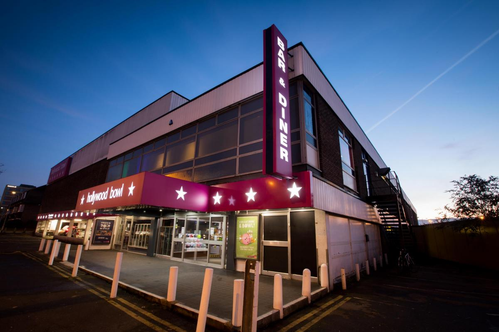

Welcome to our website...
This is the website of the Sunday Leisure Goldpin Tenpin Bowling League. Our doubles league is the result of a merger in 2014 between the Sunday Leisure Tenpin Bowling League, who have been bowling at Hollywood Bowl, Tolworth since the early seventies and the Goldpin Tenpin Bowling League, who moved from bowling Saturday evenings to Sunday mornings.
Hollywood Bowl, Tolworth's unique history...
Hollywood Bowl, Tolworth, is a 32 lane bowling centre in Kingston Road, Tolworth, located at the junction with the A3, which was opened on 21st June 1965 by the late Hattie Jacques, star of TV and the big screen, who arguably was best known for her role in the Carry On films. The bowling centre was originally a joint venture between Excel Bowling and Bass Charrington. Its name, Excel Bowl, was changed in 1974 when Charrington & Co. aquired Excel Bowling, the centre then became a subsidiary of the brewery group and the name was altered to Charrington Bowl. The centre is now one of the many Hollywood Bowl tenpin bowling centres, which is a trading division of The Original Bowling Company, who also own AMF Bowling.
The centre has been the venue for some of the top National and International Tournaments, and has attracted bowlers from every corner of the globe. On the International front, Hollywood Bowl, Tolworth, has hosted the Triple Crown Tournament and two of the most prestigious tournaments in the world, the 8th FIQ World Championships in 1975 and the 13th International Bowling World Cup in 1977. On the home front the bowl has hosted the British Tenpin Bowling Association National Championships, the NAYBC Championships and many other domestic challenge matches.
|

Come and bowl with us...
Primarily this website is for the use of the teams bowling in the Sunday Leisure Goldpin Tenpin Bowling League, as means of communicating the latest league information to its members. If you are not a member, but would like to become one and bowl through the winter on Sunday mornings with one of our teams (or even enter a new one), please contact our League Secretary for further information. We always have a friendly welcome and room for new bowlers in our league.
|